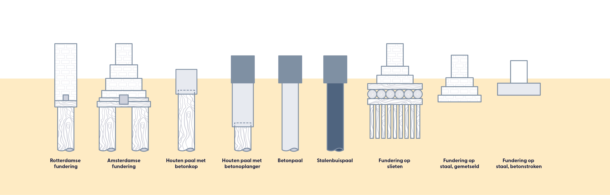

Funderingstypes
In Nederland worden diverse funderingstypes gebruikt, afhankelijk van de ondergrond en bouwtechnische eisen. Veelvoorkomende types zijn een fundering op staal, waarbij betonnen stroken onder dragende muren worden geplaatst, en paalfunderingen, waarbij palen in de grond worden geheid of geschroefd om de belasting naar diepere en stevigere grondlagen over te dragen. De keuze van het specifieke type fundering hangt af van factoren zoals bodemgesteldheid, belasting, kosten en bouwvoorschriften. Gedurende de afgelopen 150 jaar zijn er verschillende combinaties en varianten van deze funderingstypes toegepast in de bouwpraktijk.